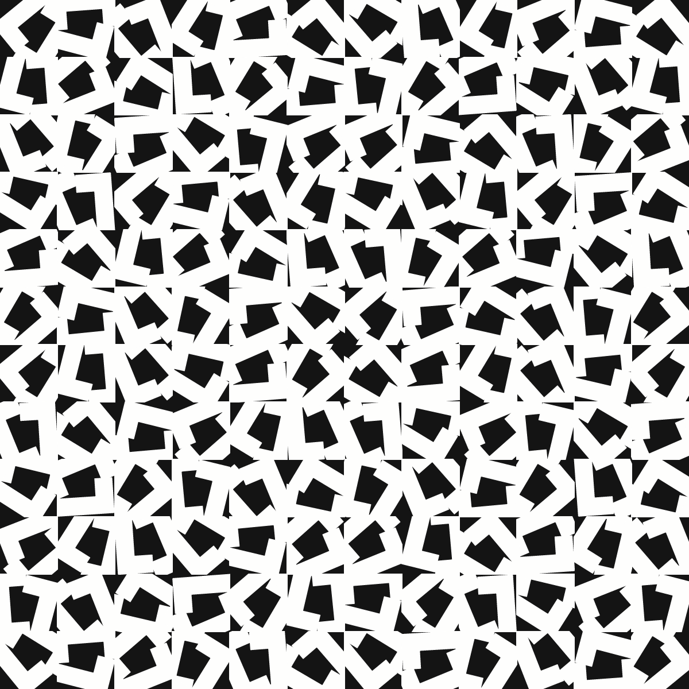
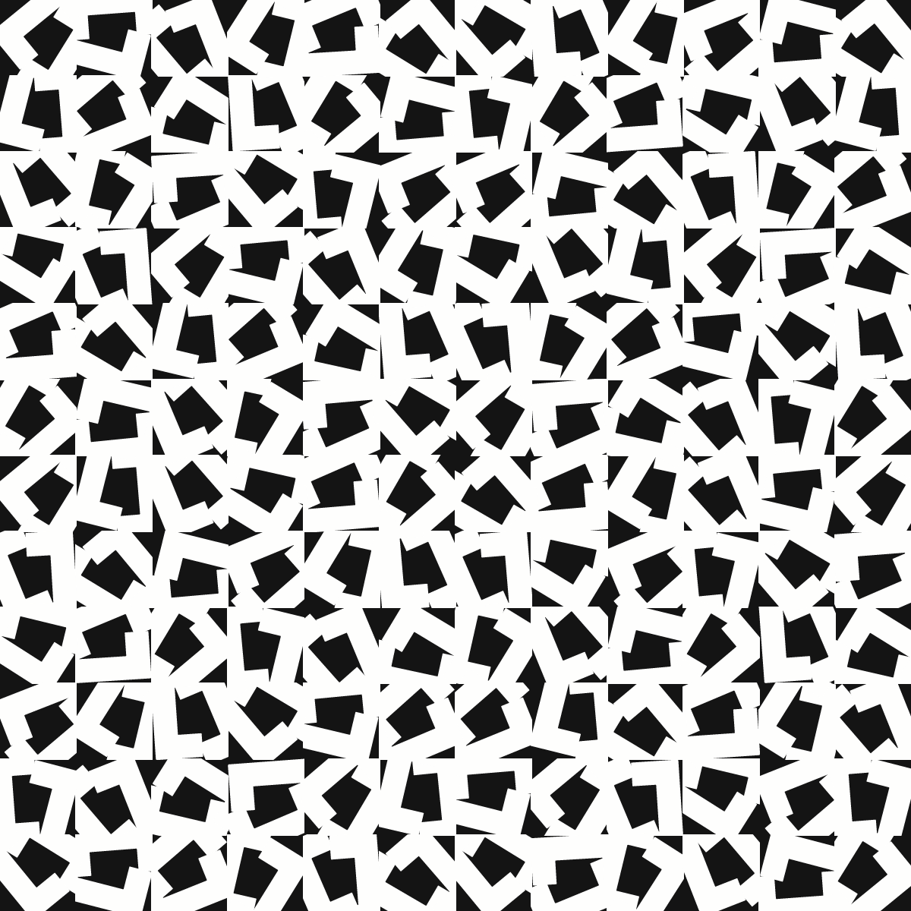

Week 1 - Vera Molnar
Structure à Partir de la Lettre U/C
Acrylic on canvas, 2020
 

This piece was a really interesting challenge to reproduce.
The basic structure is a 12x12 grid with two square bracket shapes that are rotated/translated in what appears to be a random pattern.
There are a few complications on this idea though, starting with a rotational symmetry around the center point of the image.
The rotation of each set of brackets is also puzzling. They are mostly all within a narrow range and create a very specific shape, but occasionally there are outliers.
Most of these shapes also point in the same direction but there are others with inverted chirality.
Codewise, the most interesting challenge for me was cropping the shape of the brackets according to their bounding boxes.
I ended up writing a line function that checked for collision over its span while pushing vertexes into a polyshape.
The other major challenge was fiddling with the rotation parameters to simulate the specific patterns found in this piece.
There are so many possibilities with this idea, it was hard to narrow down to something that had a real resemblance to the original.
**view code**